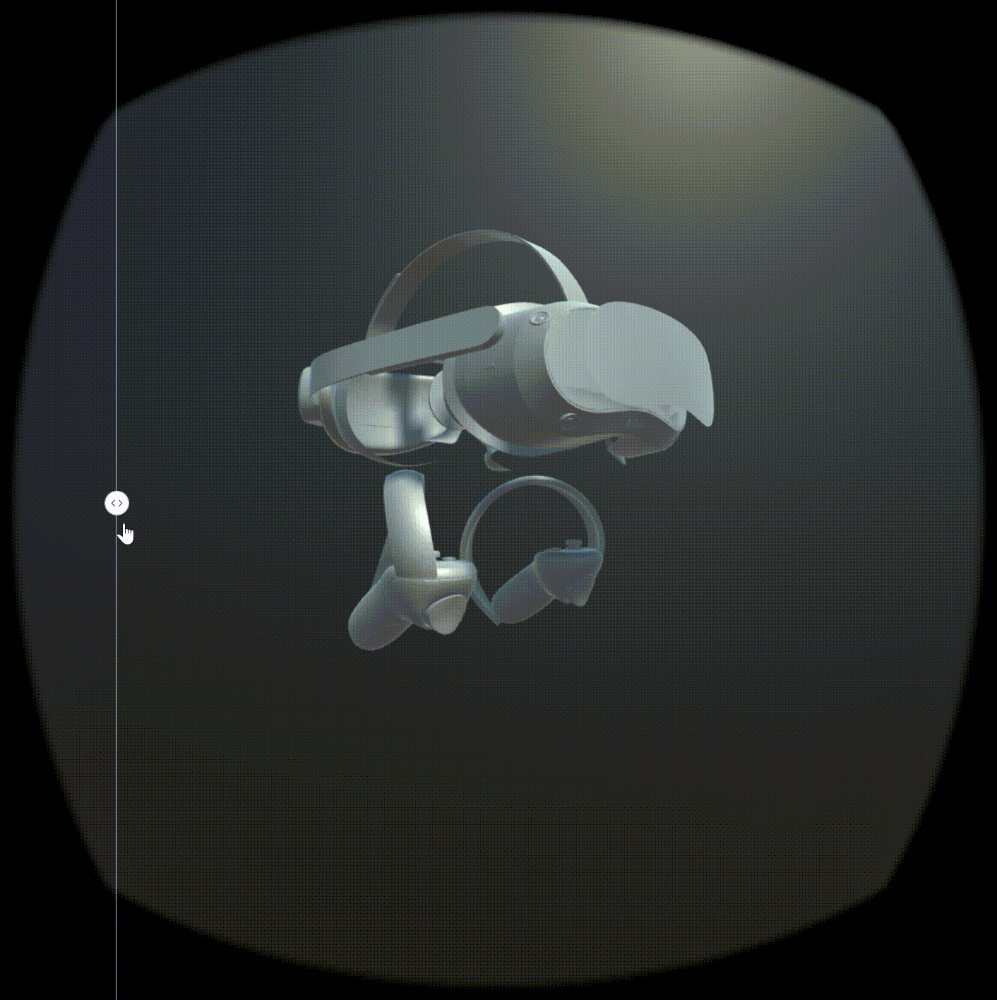
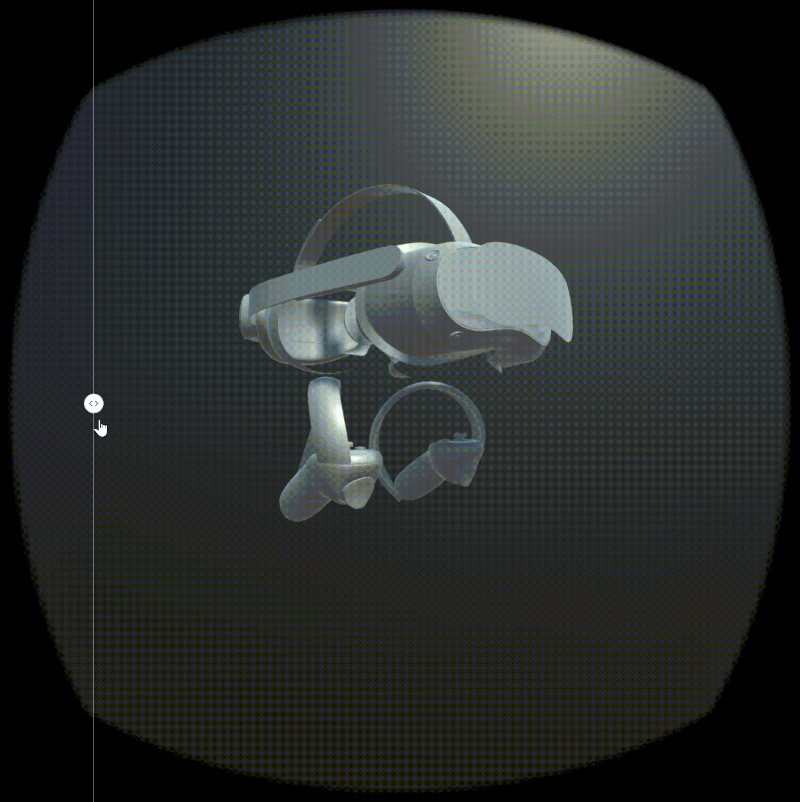

Blog post
 


Blog post
During my time at ByteDance (PICO), I customized the Universal Rendering Pipeline (URP) to enhance performance and provide better options for PICO VR devices. This involved optimizing post-processing effects, improving soft shadows, and debugging rendering issues.
Optimizing Bloom for Performance
Bloom effects rely on Gaussian blur, which can be computationally expensive depending on the number of taps used. URP traditionally employs a 9-tap Gaussian blur for horizontal blurring, which is well-suited for PC rendering but suboptimal for VR performance. To improve performance while maintaining visual fidelity, I introduced an option to reduce the number of taps from 9 to 5, which significantly reduced computational overhead. I also expanded the settings UI to allow developers to adjust the number of taps dynamically, offering a tradeoff between performance and quality. The default iteration count was optimized from 6 to 2, achieving a balance between visual clarity and frame rates.
Enhancing Soft Shadows with PCF Sampling
URP provides three levels of soft shadows: Low, Medium, and High. While these options offer flexibility, they lacked an intermediate solution that balances performance and shadow quality, especially for VR applications. To address this, I implemented a Percentage Closer Filtering (PCF) shadow technique, which provides superior quality compared to the Medium setting while maintaining good performance. Through extensive testing with Poisson disk sampling, I evaluated 4 to 6 sample points and fine-tuned the implementation to use 5 and 6 samples for optimal results. The Poisson disk samples were generated using a custom Python script, ensuring evenly distributed shadow samples for smoother and more realistic soft shadows.
Fixing the Distortion Rendering Issue
A significant challenge in VR rendering is maintaining accurate eye textures to prevent visual distortions. While debugging the distortion issue with RenderDoc, I discovered that the renderer was incorrectly using the same eye texture for both eyes. This was caused by a shared eye matrix, which prevented proper stereoscopic rendering. Upon further investigation, I found that the Multiview keyword was not being applied correctly in certain cases. To resolve this, I implemented a script that automatically applies the Multiview keyword if the built-in Multiview setting is enabled, ensuring correct rendering across all VR devices.
For more details, please refer to the blog post.
Project information
- Category Unity, VR, URP, Optimization
- Role Core Developer
- Project date May 2023 - Jan 2024
- Blog Post URL https://developer.picoxr.com/news/urp-fork
- URP Fork Repository